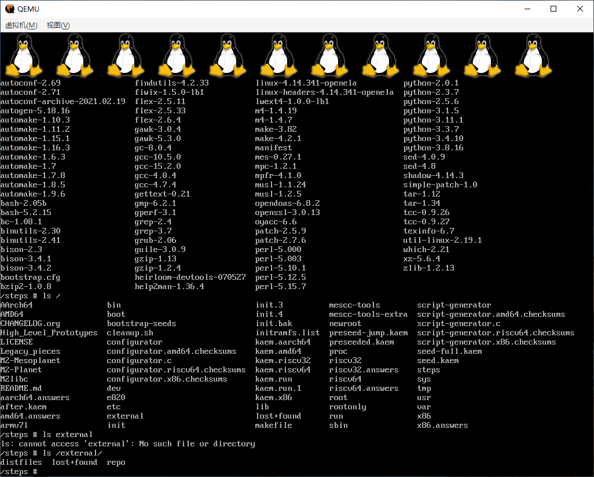

注意⚠：千万不要用
未拔除所有硬盘的主机插上烧录init.img的U盘运行live-bootstrap！否则，你将会损失1个硬盘的所有数据！
于2026年6月4日测试🕯
于2026年6月6日更新本文
前几篇博客，我提到了超硬核的Linux发行版gentoo，还提到了stage1已经失传了这件事。
我记得在十几年前，这个系统就是以自己编译著称的，从引导区到stage1都是自己编译的，但是现在只有stage3存在了。当然，直到今天，你也可以通过自托管来从头进行编译。
不论是安装LFS还是Gentoo，都对系统有最低要求，你没有Linux头文件，没有Linux内核，你就无法编译Linux。其实只要自托管（self-hosted，用自己来编译自己）也足够了，如果你需要新功能或者对现在的代码不满意，想要自行修复bug，你下载一个现成的Linux发行版，它的包管理器一般都有gcc的，你随时都可以修改系统的底层代码。
本文适合人群
本文主要写给我自己看，以供日后翻阅。
如果你心中跟我有同样的疑问，通过搜索找到我这篇博文，并且有问题不会把别人当作客服来颐使气指，要别人为你的操作负责。那么恭喜你，你就是我的受众。
如果你之前因为技术无关的原因关注了我的长毛象，发现我写了这篇文章，但不知道我在说些什么，那你现在应该马上离开。
系统要求
依旧是至少4核8G以上（强烈不推荐配置这么低的。假如你的家庭是那种，你考上了计算机专业还不准你买电脑，让你用纸和笔来写代码，并且还收走你打工赚来的工资，叫你多给老师送礼，多拍拍马屁。那么，我就建议你去垃圾堆里找一台4核8G的破电脑，或者跟老师、亲戚、朋友“借”一台二手的4核8G电脑，然后以后再想办法买一台好的电脑。）
笔者用的依旧是16核16G。亲测给虚拟机分配20线程10G已经够用（但是如果要安装gentoo的桌面图形环境，还是远远不够，当时我分配了swap空间才完成了编译）。
最重要的一点：你的CPU架构必须是x86_64 ！！！32位CPU和arm的肯定不行，只能说原作者还没开发出来。
live-bootstrap的自举条件
如果满足bootstrap的条件，那自然应该也可以自举gentoo（这个截至目前，笔者只试过在Linux下自举到stage3，也没人有这时间随便编译安装完整的gentoo桌面版）和NixOS（这个系统没有试过）。
在Linux环境下，可以通过chroot来进行自举。一般来说，chroot需要你的容器内拥有/bin/bash以及它所需要的完整的动态链接库。但是这个不需要，因为/bin/bash只是chroot的默认参数，实际上你需要运行的就是/bootstrap-seeds/POSIX/x86/kaem-optional-seed。这个程序根本不需要库和bash。
具备mount和chroot的系统
不是所有类UNIX系统都是Linux，苹果系统不是Linux，FreeBSD也不是Linux，UNIX更不是Linux。有Python3，你可以根据官方文档使用Python脚本自动完成编译。没有Python，那你也可以使用chroot来进行编译。
Windows系统
工欲善其事，必先利其器。前面讲到如何求人给你买一台电脑，但是如果你没有Linux电脑怎么办？chroot和mount也不能用，这时自举的优势体现出来了，Linux不需要任何编译器就能对自己进行编译，哪怕连系统内核都不要。
通过作者自带的python脚本，或者别的工具，拼接出磁盘映像，并写入磁盘（U盘我还没试过，试过以后我再回来修改这篇文章）。你也可以通过虚拟机来进行测试和编译。
使用Windows开始bootstrap Linux系统
首先根据官方文档或gentoo自举脚本从GitHub克隆代码、检出代码并下载子模块。
注意⚠：由于时间已经过去半年，代码老化，需要把
git -C live-bootstrap submodule update --init --recursive --depth=1 --progress改为git -C live-bootstrap submodule update --init --recursive --progress，去掉--depth=1。否则子模块下载失败，如果无视报错和警告，最终自举会失败并浪费你接下来操作的所有时间。
Windows下，很多指令效果与Linux明显不同，所以需要进行变通和修改。通过download-distfiles.sh下载软件需要使用Git Bash。你也可以通过https://archive.org/download/gentoo-bootstrap-2025.8/distfiles.tar/ 来下载并解压软件，但是前提是必须检出到63b24502c7e5bad7db5ee1d2005db4cc5905ab74这个提交。
踩坑问题
用qemu运行Windows生成的init.img会出现一些bug，以及一些编译失败的问题。原因我总结下来有3点：
- 路径反斜杠
\ - 换行符
- 软链接
软链接导致的问题
问题表现：自举过程中，musl编译出错，显示pass1.sh命令无法运行。
在GitHub仓库查看代码后发现，pass2.sh本应是软链接，结果却变成了文本文件。其实init.img中应当让pass2.sh填充pass1.sh的内容。
修复软链接的办法在这里
删除仓库，用管理员权限打开终端（并非需要Git Bash），运行如下命令重新克隆代码
1 | git clone -c core.symlinks=true https://github.com/fosslinux/live-bootstrap.git |
路径反斜杠\
在自举进程达到shell的时候，会报错然后关机。这是因为Windows采用反斜杠，而POSIX标准的系统不支持这种形式的路径。
1 | diff --git a/lib/generator.py b/lib/generator.py |
换行符
自举过程中，一些代码出现某些字符导致了bug。配置文件也有问题。在Windows下用vim -b（一定要用二进制方式打开）打开后，发现所有文件的行尾都有^M。这是因为Windows的换行符是CRLF，Linux的换行符是LF。
概念解析：CRLF是回车+换行，LF是换行。
何谓回车？就是打字机按下回车键以后，直接回到行首。回到行首的动作就是“回车”。
Git的解决办法
在你的Windows用户文件夹，找到隐藏文件.gitconfig，修改配置autocrlf为如下值
1 | [core] |
然后删除仓库重新拉取或git reset。
配置文件的解决办法：添加newline='\n'
1 | diff --git a/rootfs.py b/rootfs.py |
然后删除target/，重新生成映像文件。
在重新拉取仓库后，首先观察软链接，再用view -b或notepad++观察换行符。生成init.img后，再用view或notepad++观察换行符和反斜杠问题（注意最好用只读模式，千万不要保存）。确保Windows生成的映像文件与Linux生成的无异后，方可开始编译。
不建议的操作
有聪明的读者可能要问了：我改改python代码，把整个distfiles/都给写入init.img行不行？我的回答是：我试过，不行！
因为裸机加载文件，编译软件，都是把文件存在内存里的，写硬盘的软件e2fsprog都还没编译出来呢。你把整个目录都给拖家带口地带上，只会拖累编译。
又有自作聪明的读者要问了：那我电脑内存比你大，就是比你屌。
我的回答是：你尽管去试！内存管理也是内核的职责，你没听说过拿你现在的电脑去运行MS-DOS，内存其实还是不到1G？
自举（bootstrap）的方式
在这里，可以用虚拟机和裸机两种方式运行拼接出的映像。
裸机（强烈不建议！）
在live-bootstrap目录下，运行
1 | ./rootfs.py -b --cores <你的核数> -m 'http://archive.org/download/gentoo-bootstrap-2025.8/distfiles.tar' |
该脚本的参数不同，生成的映像宏观上仅有/steps/bootstrap.cfg的内容不同，但是每个文件头都必须记录文件的字节数，结尾也必须用二进制的0填满扇区直到整MB。所以，更改参数可以用vim，但我强烈建议把target/删了，重新运行一遍上述命令。
参数我解释一下：
-b是指我将用裸机（bare-metal）进行编译。--cores是指编译最大线程数。该程序跑到后期，Linux系统快成形时，会采用多核编译。前期读盘也要单核CPU。有影响，但不大。-m是指镜像，从哪个网址下载后续需要的软件。该参数也写入硬盘。家里有软路由的前提下，可以从网络上下载。没有软路由，你就不要指望裸机能给你翻墙，你只能在家搭建文件服务器，把制作映像前下载的文件挂上面以供下载。一旦发生无法下载，bootstrap进程将前功尽弃！注意⚠：如上地址，结尾不能有
/，否则下载会出错，导致自举失败，全程作废！协议必须是http://而不能是https://！因为自举程序在安装openssl之前就开始下载代码压缩包了！裸机无法对网络连接进行加密解密！
然后将生成的init.img写入U盘。启动电脑，设置该U盘启动。
或者拔除所有硬盘和外设，插入启动。该电脑必须插网线，不可以用WiFi，因为装过gentoo的小伙伴都知道，WiFi需要额外配置，而裸机是连WiFi驱动都没有。
- 键盘似乎不兼容，在安装完kiwix之后，会随机自动中断自举进程，并重启。拔除USB键盘和鼠标后，不再有此BUG
- 网卡似乎不兼容linux-4.14.341，根据提示似乎无法获取dhcp。
- 最大的问题：自举后期出现kernel panic。回到Windows后，发现盘符少一个，经过仔细检查，我损失了全部软件安装包，包括gentoo全套自举代码和配置文件，以及所有Linux发行版的安装盘。
- 该系统无法使用U盘启动（于2026.6.6测试，后续将刻录到SATA硬盘进行测试）
VMWare（推荐）
你需要安装qemu，用于把init.img转换为虚拟机硬盘。
还是如上执行
1 | ./rootfs.py -b --cores <你虚拟机的核数> -m 'http://<你的文件服务器地址>' |
为了防止网络问题，我推荐在主机上开启文件服务器。其实不难，下载miniweb并拷到distfiles/里面通过命令行运行就行了。如果你的镜像服务器根目录就提供文件，那么镜像结尾有/也没问题。
生成init.img后，用qemu-img转化映像文件为虚拟硬盘，移入虚拟机目录。注意：硬盘接口类型选择SATA，并且将虚拟硬盘大小扩容！
没使用的参数--external-sources我也解释一下：使用了这个参数，你需要准备另外一块硬盘，必须格式化为ext3，并将你的distfiles/目录拷入此硬盘。听上去很好对不对？问题有很多：
- Windows无法将硬盘和虚拟硬盘格式化为ext等Linux可用的格式。即使用工具格式化了，还有另外的问题等着你。
- 我在Windows上用工具格式化的
ext3分区，虽然可用拷文件进去，但是无法被live-bootstrap正确读取。 - 自举程序完成后，将会格式化硬盘2，之后在硬盘2上面启动。然而，我在虚拟机上用这个参数运行了自举程序，结果却无法启动！
虚拟硬盘配置好后，确保你的CPU虚拟化打开、Hyper-V关闭，启动虚拟机等待5小时即可。
Qemu
没有虚拟机的情况下你可以使用Qemu来编译Linux。
条件：在UEFI/BIOS把CPU虚拟化打开、控制面板Hyper-V打开（你将无法使用虚拟机）。
接下来分2种情况了
通过-q参数运行
运行如下命令，生成16G的虚拟硬盘文件
1 | ./rootfs.py -q --cores <你虚拟机的核数> -m 'http://<你的文件服务器地址>' |
我来解释一下-q和-b的区别。其实还是仅有配置文件的参数不同，但是运行起来的效果却不一样。-q参数会把标准输出给输出到ttyS0去，而-b会把标准输出给输出到显示器。这个设置不同，可能会导致该有显示的地方没有显示，程序是否在运行也没人知道。
运行上述命令后，它会报错，因为Windows没法使用qemu-system-x86_64 -enable-kvm这个参数。
然后可以无视刚才那个报错，运行命令：
1 | qemu-system-x86_64 -m 10G -smp <你虚拟机的核数> -drive file=init.img,format=raw -nic user,model=e1000 -machine kernel-irqchip=off -accel whpx -no-reboot -nographic |
我解释一下参数：
-m内存大小-smpqemu的核数-drive虚拟硬盘-nic网络类型，user是NAT网络，model=e1000是网卡型号-machine跟官方文档不一样，不选择这个，会卡顿甚至导致得重开-accel这个选项是使用Hyper-V。Windows下的qemu仅有这个虚拟化技术，如果不采用，几天几夜都无法完成，也无法观察为何失败并总结原因了。-no-reboot遇到问题不要重启，你可以查看报错，以便解决bug重新运行，找出正确的启动方式-nographic不输出任何图像，将标准输出，输出到命令行。如果没有这个参数，那将打开一个黑屏的模拟显示器，你将无法观察它的过程和错误信息了。
通过-b参数运行（不推荐）
运行如下命令生成映像文件
1 | ./rootfs.py -b --cores <你虚拟机的核数> -m 'http://<你的文件服务器地址>' |
再用qemu-img将它扩容。本小节和上一小节的映像文件都是直接写0的，未使用的空间也会被占用！
然后运行qemu进行编译
1 | qemu-system-x86_64 -m 10G -smp <你虚拟机的核数> -drive file=init.img,format=raw -nic user,model=e1000 -machine kernel-irqchip=off -accel whpx -no-reboot |
参数解释：这里-nographic要去掉，否则无法显示标准输出。
表现大致上跟虚拟机一样，但是比上一小节要慢得多。大概要花10个小时才能编译完成。
编译完成后如图所示

编译Linux后的操作
通过参数-q编译出的系统，开机加载内核会没有输出。解决办法其实也很简单，修改/boot/grub/grub.cfg即可解决。两种参数编译出的系统也就这点区别而已。
然而，该系统既无包管理器，也没有任何文本编辑器。修改文件的办法仅有sed和cat而已，所以建议先备份该文件。